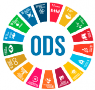

Policlínica Inova Mentes


A Policlínica Inova Mentes oferece avaliação especializada e acompanhamento personalizado para crianças e adolescentes com altas habilidades.
"Há histórias que merecem ser contadas. Há jornadas que precisam ser compartilhadas. Esta é uma delas. Aos 3 anos, ele mostrou que enxergava o mundo através de lentes diferentes. Não era apenas uma criança - era um universo de possibilidades esperando para ser descoberto. A busca por respostas levou-a a diversos especialistas. Cada consulta, cada laudo, cada relatório trazia um fragmento de entendimento. Mas no silêncio da intuição materna, ecoava uma certeza: havia mais por descobrir. Os diagnósticos mostravam peças do quebra-cabeça, mas não revelavam a imagem completa do potencial que ela via brilhar todos os dias. A virada aconteceu quando a necessidade encontrou a inovação. Das pesquisas solitárias surgiu um caminho. Das barreiras encontradas, nasceu a determinação. E na disciplina de Prática e Programação Web, encontramos a chave para transformar desafios em soluções."
Não Estamos Criando Apenas uma Plataforma. Estamos Construindo Pontes Para todos os profissionais que já sentiram que: O sistema atual não alcança todo o potencial As ferramentas existentes são insuficientes Cada mente brilhante merece um caminho único de desenvolvimento Este projeto é para você.


Entre em contato para agendar uma consulta inicial com nossa equipe especializada.
Realizamos avaliação completa com psicólogos, pedagogos e neuropsicólogos.
Elaboramos um laudo detalhado com as potencialidades e necessidades específicas.
Desenvolvemos um plano de intervenção personalizado com acompanhamento contínuo.
Identificação precoce de altas habilidades através de testes validados e avaliação multidisciplinar.
Suporte emocional e desenvolvimento de habilidades socioemocionais para crianças superdotadas.
Assessoria a escolas e famílias para adaptações curriculares e enriquecimento educacional.
Orientação para famílias no manejo das particularidades das crianças com altas habilidades.
Atividades em grupo para desenvolvimento de competências sociais e emocionais.
Direcionamento profissional baseado nos talentos e interesses específicos de cada jovem.
Fundadora e Desenvolvedora
Desenvolvedor e Designer
Desenvolvedor Full Stack
Analista e CopyWriter
Entre em contato conosco para agendar uma consulta ou tirar suas dúvidas sobre altas habilidades e superdotação.